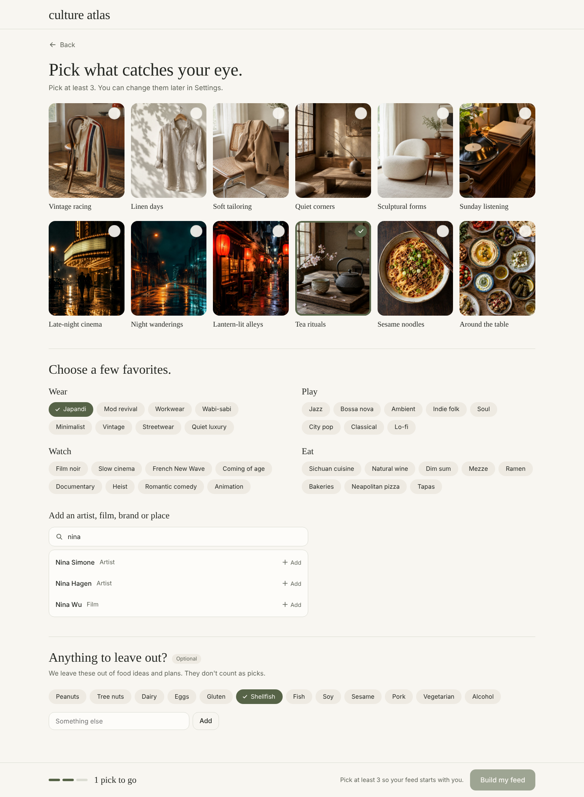
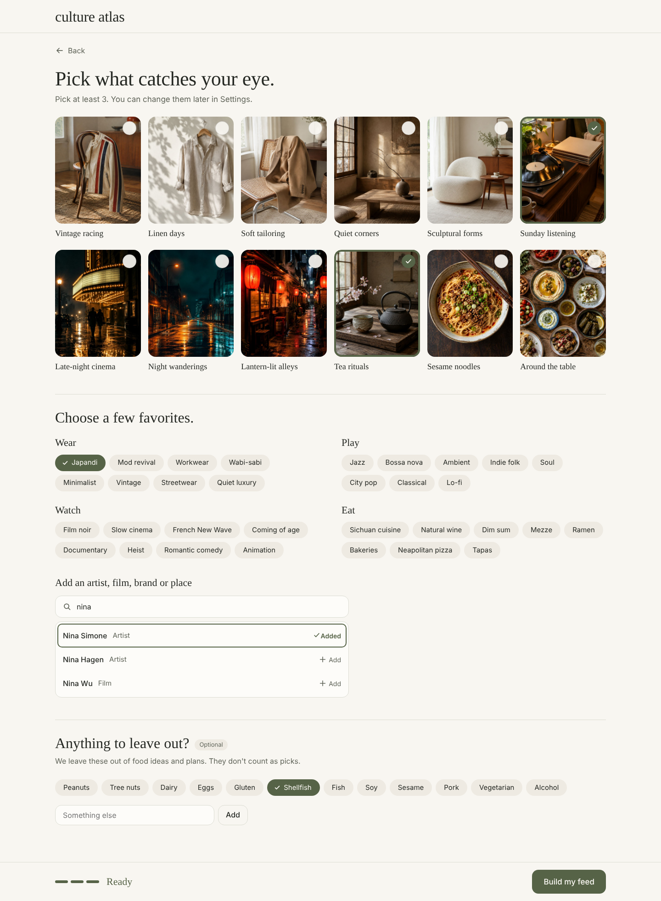

01 Library Desktop
Open full resolution
Illustrative composition. Screen contract governs behavior and exact copy.
02 Source Mobile
Open full resolution
Illustrative composition. Screen contract governs behavior and exact copy.
03 Camera Mobile
Open full resolution
Illustrative composition. Screen contract governs behavior and exact copy.
04 Glasses Connect Mobile
Open full resolution
Illustrative composition. Screen contract governs behavior and exact copy.
05 Glasses Ready Mobile
Open full resolution
Illustrative composition. Screen contract governs behavior and exact copy.
06 Uploads Desktop
Open full resolution
Illustrative composition. Screen contract governs behavior and exact copy.
07 Video Detail Desktop
Open full resolution
Illustrative composition. Screen contract governs behavior and exact copy.
08 Library Mobile
Open full resolution
Illustrative composition. Screen contract governs behavior and exact copy.
09 Glasses Unavailable Mobile
Open full resolution
Illustrative composition. Screen contract governs behavior and exact copy.
culture atlas / Settings and collectionsConnected agents
Choose what each agent can see and do.
My research assistant
ConnectedView device setup · Read preferences
Collections: Quiet weekends
Expires in 24 days · Last used today
Your activity
Read your preferences Today, 10:42
Viewed Quiet weekends Today, 10:43
No capture requests
Editable HTML mockup · illustrative data
culture atlas / Settings and collectionsConnect an agent
Access summary
Setup and preferences only
No media, microphone or camera access
Your credential will be shown once. You can revoke it at any time.
Editable HTML mockup · illustrative data
culture atlas / Settings and collectionsShare Quiet weekends
Currently private
Only you can view this collection.
Invited people can view after signing in with the invited email.
Link access, if enabled, expires after 7 days by default.
Editable HTML mockup · illustrative data
culture atlas / Settings and collectionsQuiet weekends
Shared collection · View onlyShared by Alex · A few things for slower days.
A neighborhood gallery
Art, small exhibitions and an afternoon nearby.
Sunday listening
Records to spend a little time with.
2 shared discoveries · Captured photos and videos are not included.
Editable HTML mockup · illustrative data
culture atlas / Sign-up · amendment 2.214 Taste picks
/welcome/taste · Open editable mockup (click images, chips and results to see the counter and button change).
- Desktop: one page, three stacked sections (images, Wear/Play/Watch/Eat chips with search, optional exclusions). Mobile: the same three sections as steps with "Step N of 3" and Back/Next. No bottom navigation.
- Every pick is a toggle button; selected = olive outline or surface plus a check, never color alone. Images, chips and search results all count; an image counts once.
- The sticky bar holds the counter (polite live region: "3 picks to go" … "Ready") and "Build my feed", which stays focusable but
aria-disabled below 3 with "Pick at least 3 so your feed starts with you." - Exclusions are optional, never count, and are labeled as not taste.

1440 · 2 picks, 1 to go, button disabled with its reason
1440 · Ready, button enabled, a search result addedEditable HTML mockup · illustrative data. Images are the project-owned sample illustrations in apps/web/public/samples. Tag, artist and film names are fixtures, not Qloo results.
culture atlas / Sign-up · amendment 2.215 Building your feed
/welcome/building · Open editable mockup · Qloo unavailable
- A quiet 2×2 collage of the user's own picks (images, or a text tile for chips and search picks) and "Building your feed…".
- Per-category progress (Ready / Looking) is a polite status; the screen moves to Discover as soon as the first category is ready. Reduced motion removes the collage fade.
- Qloo unavailable: "We'll keep building in the background." with Go to Discover; Discover shows labeled example results meanwhile. Nothing is fabricated.
Editable HTML mockup · illustrative data. Images are the project-owned sample illustrations in apps/web/public/samples. Tag, artist and film names are fixtures, not Qloo results.
culture atlas / Capture result · amendment 2.216 While we look
Processing state of the capture result and v2 media detail · Open editable mockup · After the first section lands
- Processing: the photo stays; "Finding your next favorites…" and one status sentence; a strip of 6 cards from the current FeedSnapshot under the heading "While we look". Reading the strip never starts generation; cards keep the usual Save and detail behavior (anonymous visitors see "Example result" cards).
- Desktop places the strip in the column beside the photo, where the reading will appear, so it is visible without scrolling; mobile places it directly under the photo as a horizontal strip (the page never scrolls sideways).
- When the first result section lands, the strip collapses in place into a "More to explore" disclosure (closed, keyboard operable), so the results below do not jump. No animation under reduced motion.
Editable HTML mockup · illustrative data. Images are the project-owned sample illustrations in apps/web/public/samples. Tag, artist and film names are fixtures, not Qloo results.
culture atlas / Global · amendment 2.217 Ready notice
Global toast · Open editable mockup
- Only for an analysis the user started, after they left its result: the toast "Your photo is ready" with the photo thumbnail, Open and Dismiss. It is announced politely and never takes focus; on mobile it sits above the bottom navigation.
- While the tab is hidden, the document title carries a badge; it clears when the tab is visible again. Native apps use a push through the existing push abstraction.
(1) Your photo is ready · culture atlas
Editable HTML mockup · illustrative data. Images are the project-owned sample illustrations in apps/web/public/samples. Tag, artist and film names are fixtures, not Qloo results.
culture atlas / Settings · amendment 2.218 Taste settings
/settings/taste · Open editable mockup
- Picks grouped Wear, Play, Watch, Eat (plus More for picks without a category), each a chip with its image or type and a Remove button named for the pick. Removing below 3 is allowed here.
- Add more opens the same pickers inline (chips for that group and search); Done closes them.
- The exclusions editor reuses the onboarding suggestions plus free text, with an explicit Save; exclusions are preferences, not taste.
Editable HTML mockup · illustrative data. Images are the project-owned sample illustrations in apps/web/public/samples. Tag, artist and film names are fixtures, not Qloo results.